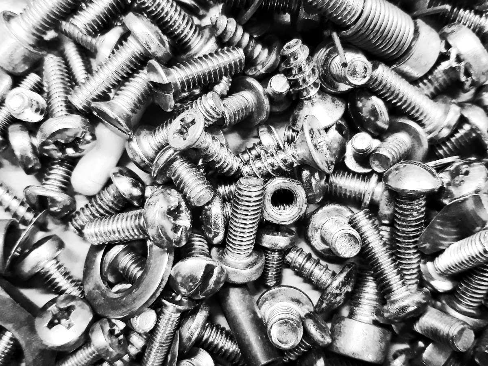
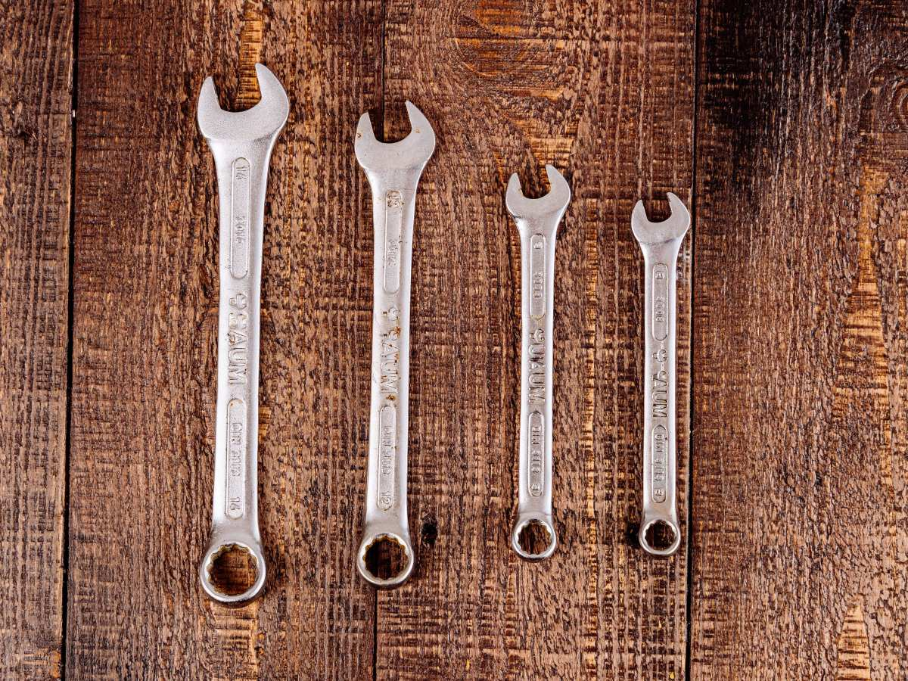
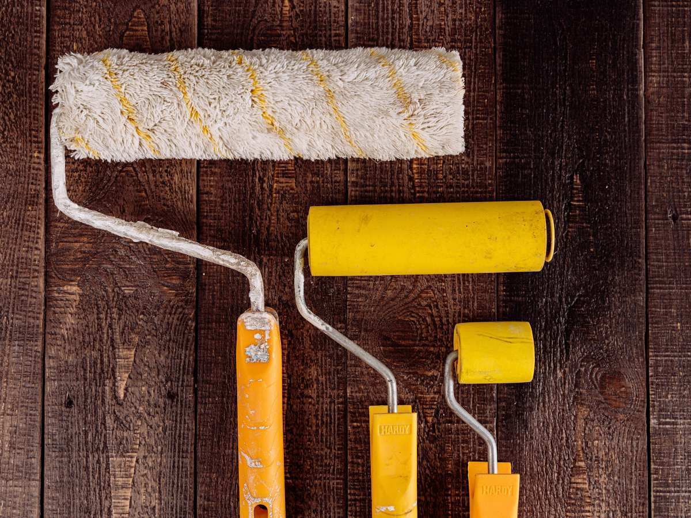
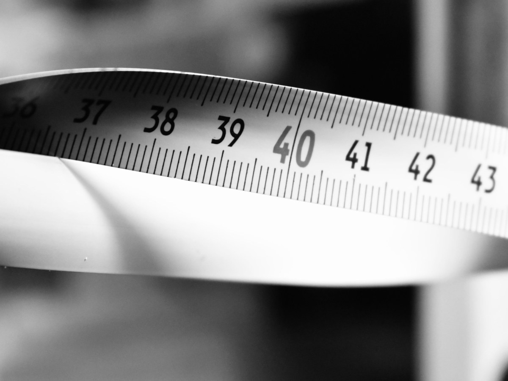
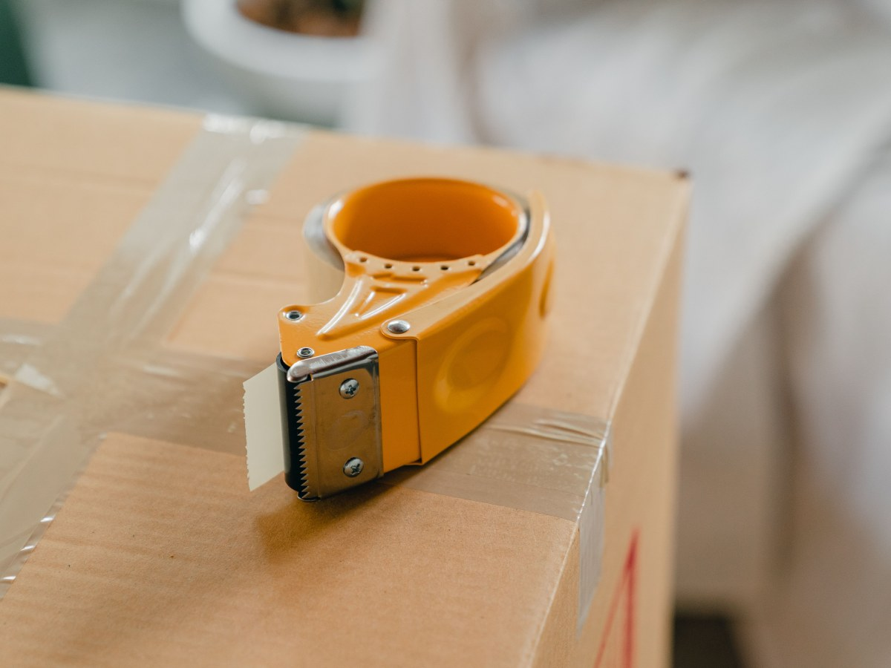
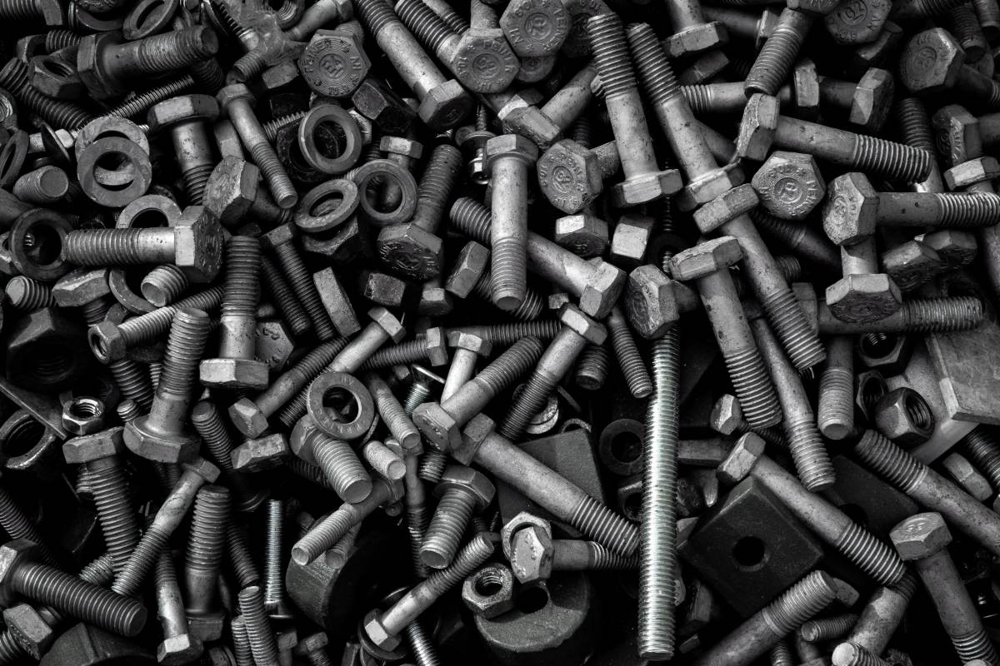
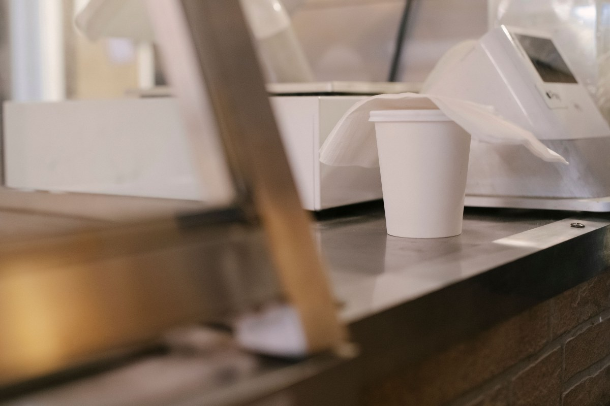
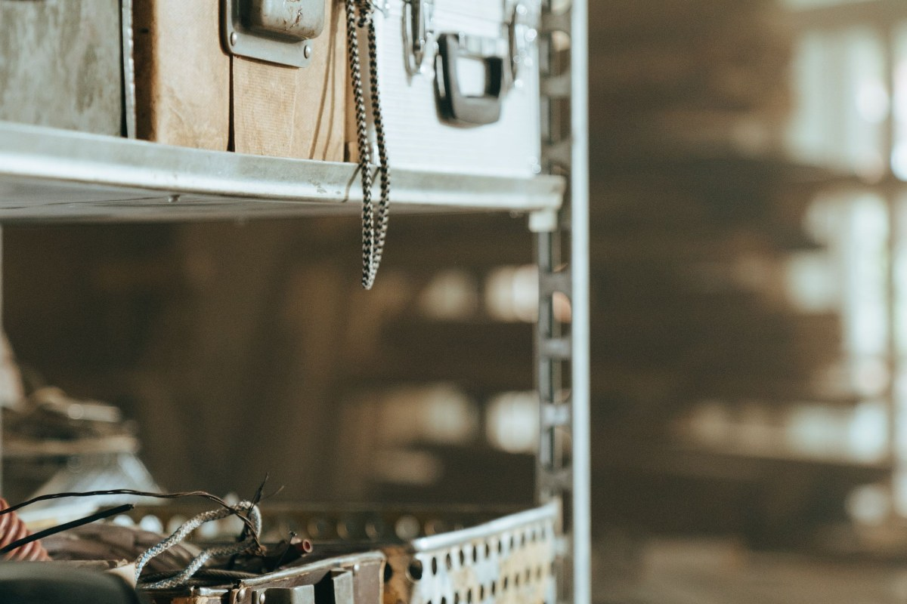
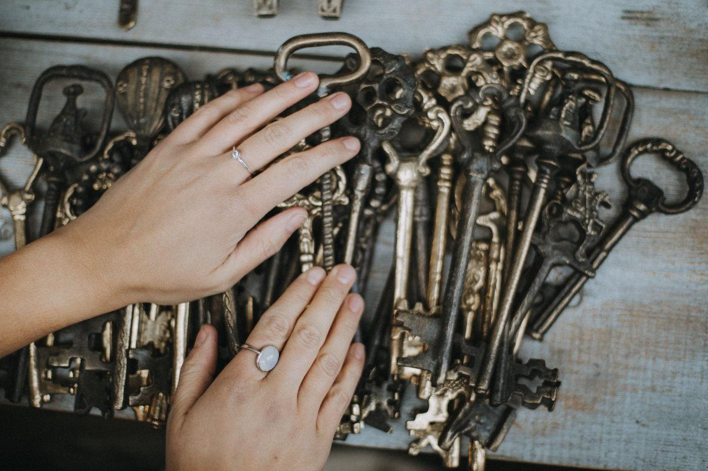
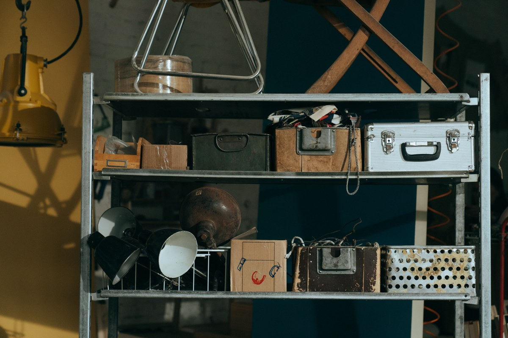

Puente Alto · Veintisiete de Septiembre 4686
¿Y si no era?
Ferretería Jadat: 151 reseñas en el barrio y una política de cambio escrita, sin letra chica.
- 151reseñas en Google
- 10días para cambiar, si no sirvió
- 3cosas que traer: boleta, caja y el producto sin uso
- 0páginas suyas: no aparecen al buscar «ferretería cerca»
La pregunta del mesón
Si no sirvió, se cambia
Política de cambio
5 líneas
- Qué se cambia
- Lo que viene sin uso, en su envase y con la boleta.
- Hasta cuándo
- Dentro de los 10 días siguientes a la compra.
- Qué no se cambia
- Cortes a medida, pintura preparada y eléctricos ya usados.
- Si salió fallado
- Se revisa con la garantía del fabricante, aunque hayan pasado los 10 días.
- Cómo se hace
- Se llega al mesón y se cambia. No hay formulario ni trámite.
Se cambia
Qué traer
- La boleta
- La caja o el envase
- El producto sin uso
La política es una propuesta de CristalWeb, no la de la ferretería: los días y las excepciones los fija el dueño.
Se compra rápido y se cambia igual de rápido.
Qué hay
Lo que se busca a las nueve de la mañana
-

Fijaciones
Tornillos y tarugos
Sueltos, por peso o por caja.
-

Herramienta
De mano
Llaves, alicates y destornilladores.
-

Pintura
Y lo que va con ella
Rodillos, brochas y diluyentes.
-

Medir
Huinchas y niveles
Antes de cortar, se mide.
-
Llaves
Copias al momento
Se hacen en el mesón.
-

Embalaje
Cinta y cajas
Lo que falta a última hora.
Las familias son una propuesta: el inventario real lo dice la ferretería.
Ciento cincuenta y una reseñas en el barrio, y ni una página donde leerlas.
Google, al 16-09-2026
El mesón
Cajas, boletas y cosas chicas





Fotos de referencia: ninguna es de la ferretería.
Dónde está
Veintisiete de Septiembre 4686
- Teléfono
- (2) 2842 5910
- Comuna
- Puente Alto
- Razón social
- Comercializadora y Distribuidora Jadat SpA
El teléfono es fijo: no tiene WhatsApp confirmado, así que acá no se promete uno.
27 de Septiembre 4686 Abrir en Google Maps
Para Jadat
Qué es real y qué falta
Lo verificado
La dirección, el fijo, la razón social y las 151 reseñas. Y que jadat.cl no existe en NIC ni resuelve, al 16-09-2026.
Lo de ejemplo
La política de cambio, las familias del mesón y todas las fotos.
Lo que falta
Una página que aparezca al buscar «ferretería cerca de mí» en Puente Alto. Hoy sólo está la ficha.